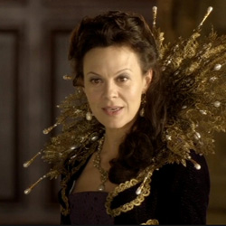

| Home | The Doctors | The Companions | The Villians |
|
|||
|
Helen A Helen A, seen in The Happiness Patrol (1988),[1] is the ruler of a human colony on Terra Alpha. Outlawing unhappiness, she brutally controls the population through executions conducted by the Happiness Patrol and Gilbert M's Kandy Man. Joseph C is her consort and she has a pet Stigorax, called Fifi. Joseph C escapes the city when the Pipe People revolt against Helen A's rule. Fifi is killed, crushed in the pipes below the city during the uprising. Helen A, unable to escape, only comes to understand the Doctor's notion that happiness can only truly be appreciated when counterbalanced with sadness when she discovers Fifi's remains. Helen A was intended to be a caricature of then British Prime Minister Margaret Thatcher. In 2010, Sylvester McCoy told the Sunday Times: "Our feeling was that Margaret Thatcher was far more terrifying than any monster the Doctor had encountered." The Doctor's calls on the drones to down their tools and revolt was intended as a reference to the 1984–85 miners' strike.[2] |